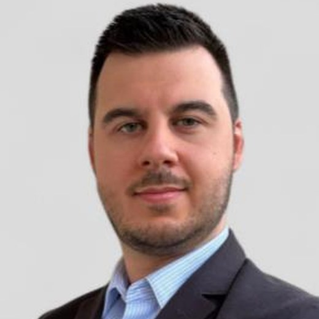

Dr. Steven Compère
Docteur-Ingénieur en chimie des matériaux — carbones nanostructurés poreux PhD Chemical Engineer in materials chemistry — nanostructured porous carbons
Je conçois et caractérise des carbones poreux nanostructurés issus de gabarits zéolithiques sacrificiels (Zeolite-Templated Carbons, ZTC), pour le stockage d'énergie et la capture du CO2. Mon parcours associe deux ans en industrie pharmaceutique sous environnement GMP à la recherche académique. I design and characterise nanostructured porous carbons derived from sacrificial zeolite templates (Zeolite-Templated Carbons, ZTC), for energy storage and CO2 capture. My background combines two years in the pharmaceutical industry under GMP conditions with academic research.

Recherche appliquée aux matériaux poreuxApplied research on porous materials
Ce que je faisWhat I do
Synthèse de carbones poreux par dépôt chimique en phase vapeur sur gabarits zéolithiques, mise en forme des poudres, et étude des capacités d'adsorption ainsi que des déformations induites sous haute pression. Le tout appuyé par une caractérisation multi-technique poussée des zéolithes et des carbones. Synthesis of porous carbons by chemical vapour deposition over zeolite templates, powder shaping, and the study of adsorption capacities and pressure-induced deformations. All supported by extensive multi-technique characterisation of zeolites and carbons.
Ce que j'apporteWhat I bring
La rigueur d'un environnement industriel réglementé (GMP/GLP, validation de méthodes analytiques) combinée à l'autonomie et à la gestion de projet acquises en R&D académique : 6 publications, 1 brevet déposé, 9 communications en conférence, encadrement de stagiaire. The rigour of a regulated industrial environment (GMP/GLP, analytical method validation) combined with the autonomy and project management developed in academic R&D: 6 publications, 1 patent filed, 9 conference contributions, student supervision.
Domaines d'expertise & R&DCore expertise & R&D
Matériaux poreux & carbonésPorous & carbon materials
- Synthèse de zéolithes (voie organique et inorganique).
- Carbones à gabarit zéolithique (ZTC) par CVD.
- Pyrolyse, activation chimique et physique.
- Fonctionnalisation et mise en forme.
- Zeolite synthesis (organic and inorganic routes).
- Zeolite-templated carbons (ZTC) by CVD.
- Pyrolysis, chemical and physical activation.
- Functionalisation and shaping.
Adsorption & physique des surfacesAdsorption & surface physics
- Sorption de gaz : N2, Ar, CO2, CH4, H2.
- Analyse de texture : BET, NLDFT, QSDFT.
- Adsorption haute pression et déformations induites.
- Capture du carbone, purification gaz/liquide.
- Gas sorption: N2, Ar, CO2, CH4, H2.
- Textural analysis: BET, NLDFT, QSDFT.
- High-pressure adsorption and induced deformation.
- Carbon capture, gas/liquid purification.
Caractérisation avancéeAdvanced characterisation
- Spectroscopie : Raman, XPS, FT-IR, UV-Vis, RPE.
- RMN liquide et du solide, ICP-OES, CHNS.
- DRX, porosimétrie mercure, pycnométrie He.
- Microscopie MEB / MET, cartographie EDS-EDX.
- Spectroscopy: Raman, XPS, FT-IR, UV-Vis, EPR.
- Liquid and solid-state NMR, ICP-OES, CHNS.
- XRD, mercury porosimetry, He pycnometry.
- SEM / TEM microscopy, EDS-EDX mapping.
Science des poudresPowder science
- Rhéomètre FT4, cellule de cisaillement Schulze.
- Densités bulk / tapée, granulométrie laser.
- Morphologie, conductivité électrique, DVS.
- Écoulement et compressibilité des poudres.
- FT4 rheometer, Schulze shear cell.
- Bulk / tapped density, laser granulometry.
- Morphology, electrical conductivity, DVS.
- Powder flowability and compressibility.
Data science & outils numériquesData science & digital tools
- Python pour le traitement de données.
- Analyse multivariée (PCA), corrélation d'images (DIC).
- ImageJ, OriginLab, LIMS, Biovia ELN.
- Auto-formation en cours : COMSOL Multiphysics.
- Python for data processing.
- Multivariate analysis (PCA), digital image correlation (DIC).
- ImageJ, OriginLab, LIMS, Biovia ELN.
- Currently self-training: COMSOL Multiphysics.
Qualité & gestion de projetQuality & project management
- Standards GMP / GLP, validation de méthodes.
- Culture HSE, Lean Management, 5S.
- Gestion de projet R&D, encadrement, mentorat.
- Communication scientifique et veille technologique.
- GMP / GLP standards, method validation.
- HSE culture, Lean Management, 5S.
- R&D project management, supervision, mentoring.
- Scientific communication and technology watch.
Expériences professionnellesProfessional experience
Chercheur post-doctoralPostdoctoral researcher
- Développement de membranes nanoporeuses à base de nanotubes de carbone verticalement alignés (VACNT).
- Synthèse par CVD assistée par aérosol et caractérisations avancées.
- Development of nanoporous membranes based on vertically aligned carbon nanotubes (VACNT).
- Aerosol-assisted CVD synthesis and advanced characterisation.
Doctorant en chimie des matériauxPhD candidate in materials chemistry
- Procédés de synthèse hybrides (voie solide et co-alimentation par CVD) pour la fonctionnalisation de ZTC — applications batteries, hydrogène, capture du CO2.
- Mise en forme des ZTC, étude des capacités d'adsorption et des déformations induites sous pression (mission de 3 mois au LFCR).
- Mise en évidence de l'influence du cation compensateur de la zéolithe sur les propriétés structurales et texturales des ZTC.
- Synthèse d'un nouveau carbone microporeux (ZTC lamellaire) ayant abouti à un dépôt de brevet avec l'Université Nationale de Yokohama.
- Missions de caractérisation : CEMHTI (Orléans, RMN du solide), LASIRe (Lille, RPE), LFCR (Anglet, déformations).
- Hybrid synthesis routes (solid-state and CVD co-feeding) for ZTC functionalisation — battery, hydrogen and CO2 capture applications.
- ZTC shaping methodologies, adsorption capacity and pressure-induced deformation studies (3-month secondment at LFCR).
- Demonstrated the influence of the zeolite counter-ion on the structural and textural properties of ZTC.
- Synthesis of a new microporous carbon (lamellar ZTC), leading to a patent filing with Yokohama National University.
- External characterisation campaigns: CEMHTI (Orléans, solid-state NMR), LASIRe (Lille, EPR), LFCR (Anglet, deformation).
Ingénieur R&D en science des matériauxR&D materials science engineer
- Gestion de projets de caractérisation physique des poudres en environnement GMP/GLP, incluant développement et validation de méthodes analytiques.
- Collaboration avec les départements Formulation, Procédé et Production (innovation, troubleshooting).
- Implémentation de la méthodologie 5S dans l'échantillothèque (5000+ échantillons) pour garantir traçabilité et intégrité des stocks.
- Managed physical powder characterisation projects in a GMP/GLP environment, including analytical method development and validation.
- Worked with Formulation, Process and Production departments on innovation and troubleshooting.
- Implemented 5S methodology across the sample library (5,000+ samples) to ensure full traceability and stock integrity.
Stagiaire en science des matériaux (master)Materials science intern (master's)
- Création d'une base de données de référence pour les excipients et application de l'analyse multivariée (PCA).
- Optimisation de la stratégie analytique par identification des tests redondants.
- Built a reference database for excipients and applied multivariate analysis (PCA).
- Optimised the analytical strategy by identifying redundant tests.
Stagiaire en chimie analytique (bachelier)Analytical chemistry intern (bachelor's)
- Synthèse de catalyseurs métallocènes sur support silice.
- Protocole de diagnostic par spectrométrie UV-Vis en réflexion diffuse (DRUVv) pour l'analyse des états d'activation.
- Synthesis of silica-supported metallocene catalysts.
- Diagnostic protocol by diffuse reflectance UV-Vis spectroscopy (DRUVv) for activation state analysis.
DiplômesDegrees
Doctorat en chimie des matériauxPhD in materials chemistry
Université de Poitiers, FranceUniversity of Poitiers, France
Thèse : « Zeolite-Templated Carbons : synthèse, fonctionnalisation, mise en forme et étude des déformations induites par l'adsorption de gaz à haute pression ».
Direction : A. Sachse, I. Batonneau-Gener, L. Perrier.
Thesis: “Zeolite-Templated Carbons: synthesis, functionalisation, shaping and study of deformations induced by high-pressure gas adsorption”.
Supervisors: A. Sachse, I. Batonneau-Gener, L. Perrier.
Diplôme d'ingénieur industriel en chimieIndustrial engineering degree in chemistry
HELHa, BelgiqueHELHa, Belgium
Mémoire : « Caractérisation physique d'excipients pharmaceutiques ». Thesis: “Physical characterisation of pharmaceutical excipients”.
Bachelier en chimie appliquéeBSc in applied chemistry
HELHa, BelgiqueHELHa, Belgium
Mémoire : analyse de catalyseurs métallocènes en pétrochimie par spectroscopie UV-Vis en réflexion diffuse. Thesis: analysis of metallocene catalysts in petrochemistry by diffuse reflectance UV-Vis spectroscopy.
Publications & brevetPublications & patent
6 articles publiés, 1 brevet déposé. Quatre articles supplémentaires sont en préparation, dont une revue. 6 published articles, 1 patent filed. Four further papers are in preparation, including a review.
Porous carbon-based material and method for producing porous carbon-based material
Influence of the zeolite counter-ion on the properties of zeolite-templated carbons
DOI: 10.1016/j.micromeso.2026.114107 →Zeolite-templated carbon pellets by in situ generated binder: deformation behavior under high-pressure CO2 adsorption
DOI: 10.1016/j.micromeso.2025.113837 →N,S-doped zeolite-templated carbon like supported Ni4Fe4S8 as an efficient bifunctional catalyst for rechargeable zinc–air batteries
DOI: 10.1002/cctc.202400555 →Impact of thermal ethylene degradation in zeolite-templated carbon synthesis
DOI: 10.1016/j.micromeso.2023.112967 →Acidity: a key parameter in zeolite-templated carbon formation
DOI: 10.1002/smll.202300972 →Communications en conférenceConference contributions
9 communications entre 2023 et 2025, dont 5 présentations orales. Sélection ci-dessous. 9 contributions between 2023 and 2025, including 5 oral presentations. Selection below.
-
FOA 2025
Porto, PTOralOral — Self-supported zeolite-templated carbon wafers for gas adsorption and induced deformation studies. -
GFZ 2025
Blériot-Plage, FROralOral — From solid precursors to zeolite-templated carbons: a molecular odyssey toward porous carbon materials. -
ZMPC 2024
Osaka, JPPoster — Zeolite-templated carbons: a new solid-state synthesis route. -
FEZA 2023
Portorož, SIOralOral — Advances in zeolite-templated carbon synthesis: investigating the effect of temperature and zeolite acidity. -
GFZ 2023
Obernai, FROralOral — Impact of the ethylene transformation mechanism in the synthesis of zeolite-templated carbons. -
C'Nano 2023
Poitiers, FRPoster — Micropore 3D graphenes: circumventing essential issues in large scale synthesis.
Techniques & outilsTechniques & tools
SynthèseSynthesis
CaractérisationCharacterisation
Science des poudresPowder science
NumériqueDigital
LanguesLanguages
Encadrement & engagementsLeadership & involvement
Profils scientifiquesScientific profiles
Travaillons ensembleLet's work together
Ouvert aux collaborations de recherche, aux projets R&D industriels et aux échanges autour des matériaux poreux. Open to research collaborations, industrial R&D projects and discussions around porous materials.